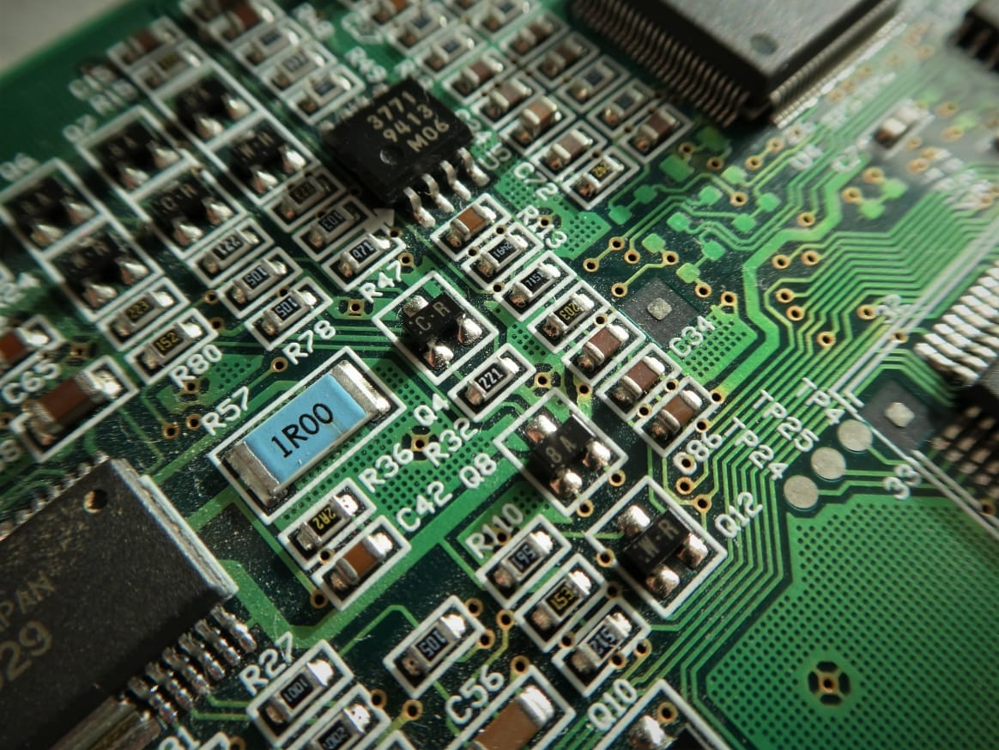
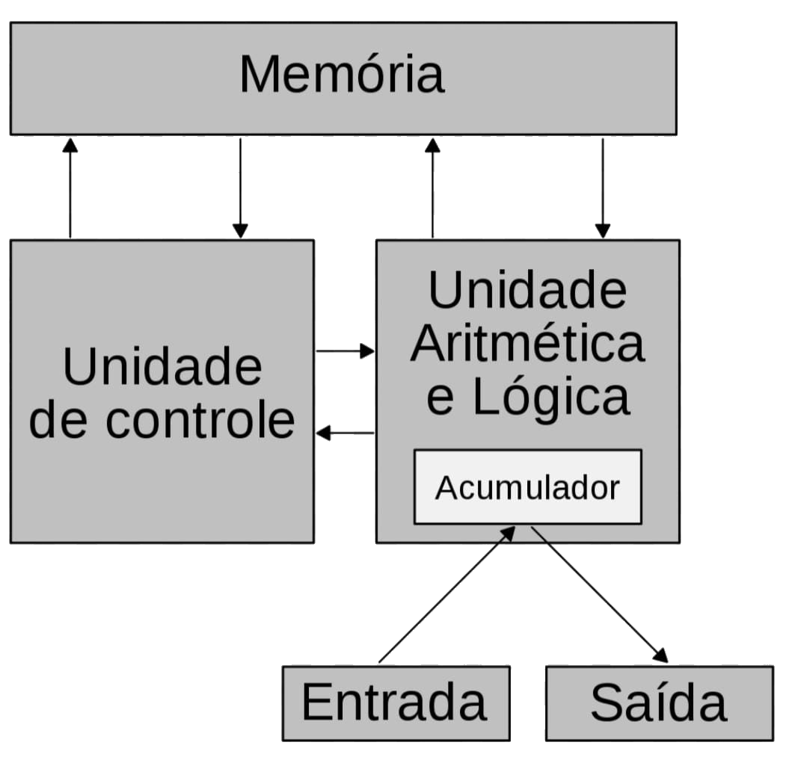

Arquitetura dos computadores

O que é a arquitetura de computadores?
Para que o conceito fique mais claro, é bom entender que arquitetura se
refere a um projeto de uma construção. Ela vai adotar uma série de ações
para organizar e criar espaços que possam dar condições a diferentes
atividades humanas.
Quando migramos o termo para a área da tecnologia da informação
temos a arquitetura da computação — um projeto que define os parâmetros
e o modo em que os diversos componentes de um computador devem ser organizados
para não só entrar em operação, mas também para alcançar a qualidade e o desempenho
necessários, a fim de ser aplicado na função para o qual foi intencionado.
Um computador é um dispositivo que executa uma série de instruções escritas pelo
homem para gerar um resultado. Essa sequência é chamada de algoritmo. Isso é o que
conhecemos como programa de computador, ou software dentro do âmbito profissional.
Já as partes físicas são chamadas de hardware. Ao unirmos o software e o hardware,
temos um sistema computacional.
Os computadores podem ser classificados em pelo menos três categorias, conforme sua composição,
desempenho e aplicação:

desktops: são direcionados a usuários comuns e apresentam um desempenho razoável a baixo custo. Nos últimos anos, já têm surgido diversos computadores de mesa com especificações mais robustas
servidores: são utilizados para aplicações mais complexas, pois precisam lidar com um grande volume de operações simultaneamente — é possível que um servidor seja um desktop aprimorado para essa função, mas existem aqueles com projeto bastante evoluído, podendo contar com centenas de processadores e ampla capacidade de armazenamento;
sistemas embarcados: são computadores arquitetados para trabalhar em uma única tarefa, como os que existem em veículos, elevadores, celulares ou micro-ondas. De uma forma generalista, a arquitetura de computadores também está relacionada ao funcionamento de diferentes sistemas e aplicações em determinado ambiente, funcionando em conjunto ou não, mas que fazem parte de uma mesma infraestrutura. É o que ocorre, por exemplo, nas empresas, que necessitam de uma série de máquinas e serviços de TI para operar e garantir a segurança de suas operações.
De uma forma generalista, a arquitetura de computadores também está relacionada ao funcionamento de diferentes sistemas e aplicações em determinado ambiente, funcionando em conjunto ou não, mas que fazem parte de uma mesma infraestrutura. É o que ocorre, por exemplo, nas empresas, que necessitam de uma série de máquinas e serviços de TI para operar e garantir a segurança de suas operações.
Pesquisas feitas recentemente revelam que houve um aumento considerável no número de pessoas que possuem computador em casa. Poucos sabem sobre o processo de evolução dos computadores, até chegar aos modelos modernos de tecnologia de ponta dos dias atuais. A seguir a evolução cronológica dos computadores:
1946: é anunciada a criação do primeiro computador digital eletrônico de grande escala do mundo, o ENIAC (Electrical Numerical Integrator and Calculator).
1951 a 1959: surgem os computadores de primeira geração. Esses eram capazes de calcular com uma velocidade de milésimos de segundo, além de serem programados em linguagem de máquina.
1959 a 1965: surgem os computadores de segunda geração, com capacidade de calcular com uma velocidade de microssegundos, sendo programados em linguagem montadora
1965 a 1975: nascem os computadores da terceira geração. Esses computadores passam a ter diversos componentes miniaturizados e montados em um único CHIP, sendo capazes de calcular em nanossegundos, com uma linguagem de programação de alto nível, orientada para os procedimentos.
1975 a 1981: são criados os computadores da quarta geração. Seguindo a tendência da terceira geração de miniaturização de seus componentes e o aperfeiçoamento dos seus Circuitos Integrados (CI). As linguagens utilizadas nessa geração eram de altíssimo nível, orientada para um problema.
1990: a partir dessa década são lançados softwares de melhor qualidade e com capacidade de processar as informações com maior rapidez.
2000: após a virada do milênio os computadores continuaram a seguir a tendência de miniaturização de seus componentes e, tornando dessa forma os computadores mais maleáveis e práticos nas tarefas diárias. Além disso, há um investimento maciço em seu design.